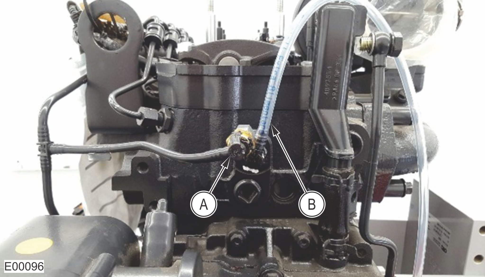

Fuel Injector Leakage Test
Caution
Always STOP the engine and wait at least 10 minutes for the fuel pressure to dissipate before working on any fuel system components. Working on pressurized fuel system components can result in high-pressure injection injury.
If there is a strong suspicion of an injector having too high of a leakage rate, check all injectors individually.
Fuel Circuit Pressure Check Kit (212542)
Stopwatch
Injector Leakage Chart
Total Injector Leakage | Blocked Injector Number | Measured Leakage When Blocked | Individual Injector Leakage |
|---|---|---|---|
1 | |||
2 | |||
3 | |||
4 | |||
5 | |||
6 |
Prepare to check the total injector leakage.

A
Fuel Return Line Disconnected from Cylinder Head and Capped
B
Clear Plastic Hose Connected to Cylinder Head
With the engine STOPPED, remove the injector return line from the rear of the cylinder head.
Plug the line with the capped fitting from the Fuel Circuit Pressure Check Kit to prevent it from leaking fuel while the test is being performed.
Install the clear plastic hose from the Fuel Circuit Pressure Check Kit to the fuel return connection on the cylinder head. For the most accurate test results, route the clear plastic hose above the connection on the cylinder head, as this will allow air to be removed from the hose by the fuel flow.
Measure the total injector leakage.
While holding the clear plastic hose, have an assistant START the engine. Wait for air to be purged from the hose.
Once all air is removed from the hose, place the open end into the 100 ml (3.4 oz) container from the Fuel Circuit Pressure Check Kit and immediately start the stopwatch.
When the stopwatch reaches 60 seconds, STOP the engine.
Measure the amount of fuel in the container and compare it to the table below:
Engine Model
Maximum Acceptable Volume
N45
60 ml (2.0 oz)
N67
80 ml (2.7 oz)
If the measured amount of fuel is below the maximum acceptable amount, the injector leakage is acceptable.
If the measured amount of fuel is over the maximum acceptable amount, continue to the next step.
Check the torque on the retaining nuts of the fuel injector tubes.
Injector tube retaining nut torque: 45–55 N-m (34–40 ft-lbs)
If any of the retaining nuts are loose, torque to specification and repeat Step 2.
If none of the retaining nuts are loose, continue to the next step.
Perform the individual injector block off procedure.
Note
It may be necessary to remove more than one injector supply line for access to remove the fuel supply line being blocked off. All fuel supply lines must be reinstalled to their corresponding injectors, except for the injector being tested for leakage. Make sure the reinstalled fuel supply lines are not leaking during each leakage test, or the measured leakage will not be accurate.
Remove the fuel supply line from injector 1 from the injector tube and fuel rail.
Cap the injector 1 tube and fuel rail port with caps from the Fuel Circuit Pressure Check kit.
Measure the injector leakage with one injector blocked.
Repeat Step 2 and document the measured leakage with injector 1 blocked.
Repeat the block off procedure and injector leakage measurement for each injector, documenting the measured leakage for each injector on the chart.
Identify any injectors that are leaking more than 14 ml (0.47 oz).
Subtract the 'Measured Leakage When Blocked' from the 'Total Injector Leakage'. The difference is the 'Individual Injector Leakage' for the blocked off injector. The injectors with an Individual Injector Leakage over 14 ml (0.47 oz) require replacement.
Looking at the chart below as an example, if the Total Injector Leakage is 230 ml (7.8 oz), and the measured leakage when injector 2 is blocked is 150 ml (5.1 oz), the Individual Injector Leakage is 80 ml (2.7 oz) and injector 2 needs to be replaced.
Total Injector Leakage
Blocked Injector Number
Measured Leakage When Blocked
Individual Injector Leakage
230 ml
1
220 ml
230 – 220 = 10 ml
2
150 ml
230 – 150 = 80 ml
3
220 ml
230 – 220 = 10 ml
4
220 ml
230 – 220 = 10 ml
5
120 ml
230 – 120 = 110 ml
6
220 ml
230 – 220 = 10 ml
After replacing the injectors with excessive leakage, repeat Step 2, and verify that the total leakage is within the maximum acceptable volume.